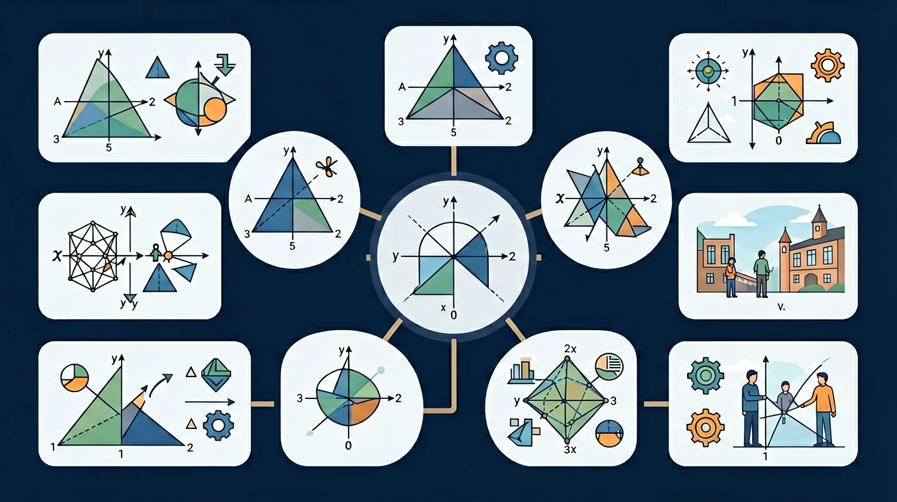

🌍 And（已知）：我们已经认识了基本平面图形，能辨认和描述图形的形状
⚡ But（问题）：但是，蝴蝶翅膀为什么两边一样？跷跷板怎么动的？风车为什么转？这些都是图形变换！
💡 Therefore（新知）：因此，今天我们学习三种图形变换：对称（镜像翻折）、平移（直线移动）、旋转（绕点转动）
三年级数学 · 发现数学中的美丽变换！

学习图形的三种变换，用画笔和拖拽创作你的艺术！收集⭐解锁成就！
进度: 0%
沿对称轴折叠，两侧完全重合！
图形沿直线移动，形状和大小不变！
图形绕一个点转动，形状和大小不变！
在左半边画画，右边会自动出现对称图案！
判断哪些图形有对称轴，并选出正确答案！
看图判断图形平移了哪个方向，移动了几格？
完成以下变换任务，成为图案设计师！
画出这个图形关于虚线的对称图形！
小星星向右平移了几格？
图形顺时针旋转了多少度？
星星 ⭐ × 0
成就 🏅 × 0
蝴蝶的翅膀是轴对称图形，美丽的花纹两侧完全相同！
火车在轨道上行驶就是平移！形状不变，只是位置移动！
摩天轮转动就是旋转！绕着中心点转动！
用对称、平移、旋转可以创作出漂亮的图案！
用三种变换创作的美丽图案 ✨
恭喜！
🎯 能说出轴对称图形的对称轴数量
🎯 能判断图形平移的方向和距离
🎯 能分析组合图案中使用的变换类型
❓ 为什么有的图形对折后能完全重合，有的不行？
❓ 平移和旋转后的图形，大小真的不会变吗？
❓ 怎么判断一个图案用了哪种变换？
学完这一课，这些问题你都能自信地回答。
先来测一测你已经掌握了哪些前置知识，帮助你更好地学习新内容！
第1题：下面哪个字母是轴对称图形？
第2题：一个图形向右移动5格，这叫做？
And：学生已认识简单图形
But：不知道如何判断对称轴数量
Therefore：学会用对折法找对称轴
对称轴就像图形的镜子，两边完全一样。比如长方形有2条对称轴（长边和短边对折），而正方形有4条（对角线和边中线都能对折）。动手折一折作业本的纸，发现对折后两边能重合的线就是对称轴！
🌍 蝴蝶翅膀、人脸左右对称，剪纸艺术就是利用对称轴剪出漂亮图案。
下面哪个图形有3条对称轴？
用方格纸设计一个同时包含平移和旋转对称的地砖单元
三种变换的区别：平移=直线搬家（位置变，方向大小不变）；旋转=绕点转圈（位置和方向变，大小不变）；对称=照镜子（位置和方向变，大小不变，且是镜像）。
💡 用"迁移它"的视角：想想这个知识在哪些生活场景中还会用到？
注意：以上是同学们容易犯的典型错误，做题时要格外小心！
And：知道物体可以移动
But：不理解平移的方向和距离
Therefore：用箭头和数字描述平移
平移就像小火车直直地开，图形的大小形状都不变。比如把正方形向右平移3格，每个顶点都向右移动3格（用箭头→表示方向，数字3表示距离）。记住：平移时不能旋转哦！
🌍 电梯上下移动、推拉窗户、传送带运货都是平移现象。
三角形从(2,1)平移到(5,1)，描述正确的是？
And：见过转动的物体
But：不会描述旋转中心和角度
Therefore：学会用钟表指针理解旋转
旋转就像大风车绕中心点转圈。比如把三角形绕顶点顺时针旋转90度（像钟表从12点到3点），其他两个点也会跟着转。关键要找准旋转中心、方向和角度三要素！
🌍 摩天轮旋转、钟表指针转动、旋转门都是旋转的例子。
长方形绕中心逆时针转180度后，会怎样？
先独立作答，再点选项查看对错与错因。
将数字“3”沿垂直方向平移2格后，会变成什么样子？
下列哪个图形旋转90度后能与原图重合？
用平移方法可以制作出什么图案？
将字母“N”绕中心点旋转____度后会变成原图形
答案：180
N具有180度旋转对称性
电风扇叶片转动属于____变换，推拉窗户属于____变换
答案：旋转,平移
区分旋转与平移的典型实例
完成学习后，用这两道题检验你对"对称、平移和旋转"的掌握程度！
第1题：下面哪种变换改变了图形的方向但不改变大小？
第2题：一个图形沿对称轴翻折后，两部分能完全重合，这叫做？
回忆：今天学了哪些关键词和规则？试着说出来。
用自己的话解释今天学的核心概念，不看书能说清楚吗？
用今天的知识解决一个实际问题，或写一个新例子。
把今天的知识与已有知识联系起来：有什么共同点？有什么区别？能不能自己创造一道新题？
✅ 用尺子测量对应点距离验证平移
💡 混淆方向改变与位置改变
✅ 用不同方向对折验证
💡 仅测试单一方向对折
口诀：对折重合是对称，直线移动叫平移，转个圈圈是旋转
类比：平移像推抽屉，旋转像钟表指针，对称像照镜子